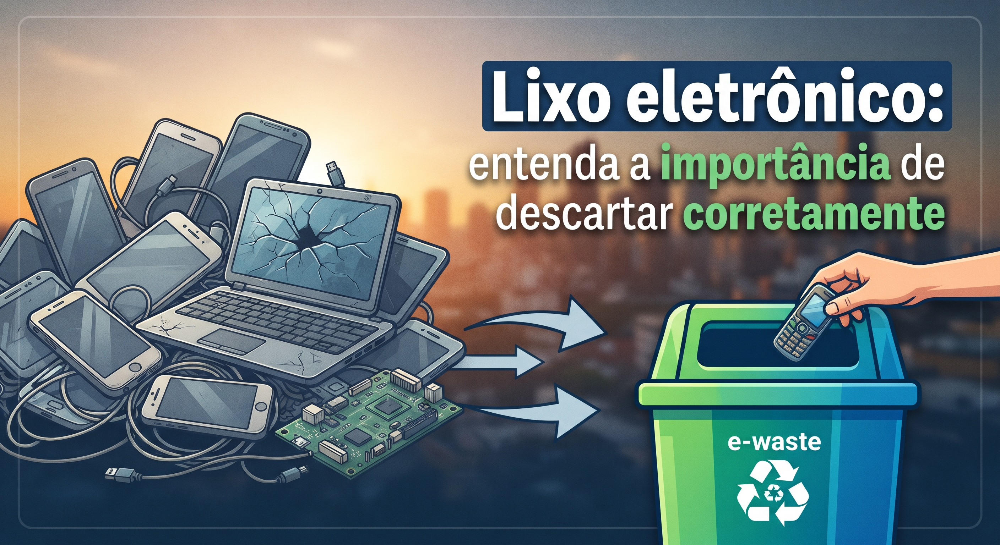

Vídeo Educativo: O Destino do Lixo Eletrônico
Assista ao vídeo gerado por IA sobre a reutilização de eletrônicos e economia circular. O vídeo não possui falas nem narração.
Explore nossos vídeos educativos, podcasts e conteúdos interativos sobre sustentabilidade, reciclagem e impacto ambiental.
Assista ao vídeo gerado por IA sobre a reutilização de eletrônicos e economia circular. O vídeo não possui falas nem narração.
Ouça nosso bate-papo exclusivo sobre a reutilização de eletrônicos antigos e o impacto positivo de dar uma nova vida aos aparelhos.
Bem-vindos ao podcast EcoTech. Hoje conversamos com o nosso convidado especial sobre o destino real dos nossos eletrônicos.
Conta pra gente: como é saber que aquele teu telemóvel antigo ganhou uma nova vida?
É uma sensação maravilhosa. Ver que um aparelho que estava parado na minha gaveta agora está a trazer utilidade e a fazer a felicidade de outras pessoas, não tem preço.
Reciclar e doar é cuidar do futuro.
Exato. E para quem ainda tem dúvidas em casa, qual seria a sua dica principal para dar o primeiro passo?
A dica é simples: antes de encostar ou jogar fora de qualquer jeito, dê uma olhada se ele funciona ou procure um ponto de coleta certificado.
O lixo de um pode ser a grande oportunidade de outro.
Acompanhe reportagens e documentários relacionados à tecnologia sustentável e gestão de resíduos.
